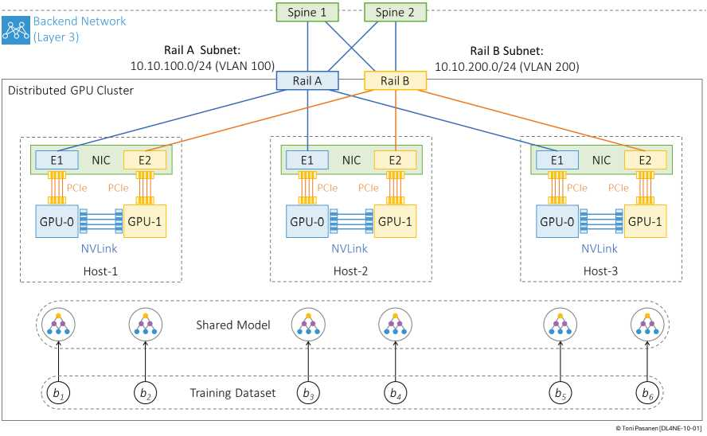
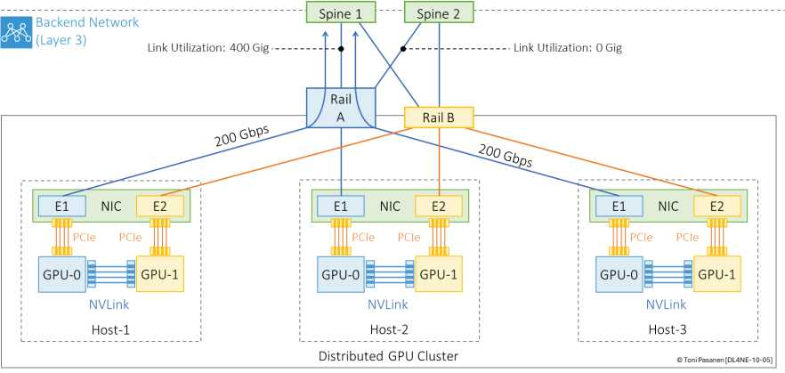

每主机 2 GPU + 双口 NIC，GPU0→Rail A，GPU1→Rail B，同 Rail 一跳，跨 Rail 要 Rail-Spine-Rail 三跳。机内 NVLink 快，机间 PCIe+网慢——慢的就是瓶颈。数据并行 6 micro-batch 均分 6 GPU，同步时多流并发，最易撞车。
① Egress 拥塞：多对一（incast）打爆上行/下行队列；② 单点故障：单 Rail/单 Spine 挂掉 jobs 全停；③ HOL 阻塞：队头大包挡住后面小包（VOQ 可解）；④ Hash 极化 + ECMP：大象流哈希撞车，一条链路撑死、其余闲死。书 p225-231 每坑一图。
Ch11 答拥塞（ECN/PFC/DCQCN），Ch12 答极化（流/流片/包喷洒），Ch13 答拓扑（Rail 设计），Ch14 答同步（NCCL）。本课记住“病症”，后三天学“药方”。


默画基线拓扑并标出 1 跳 vs 3 跳路径。